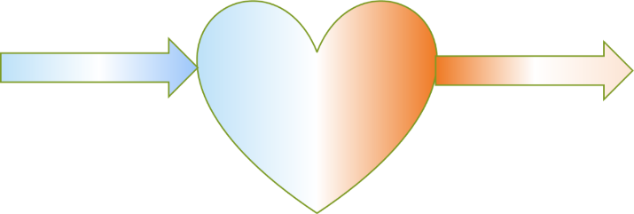
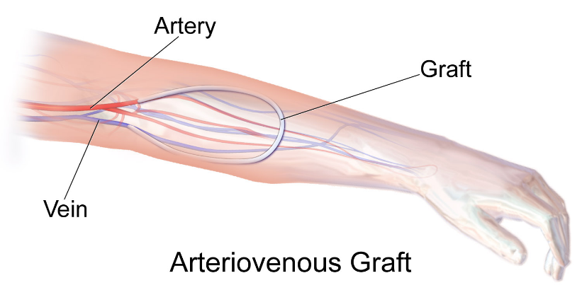
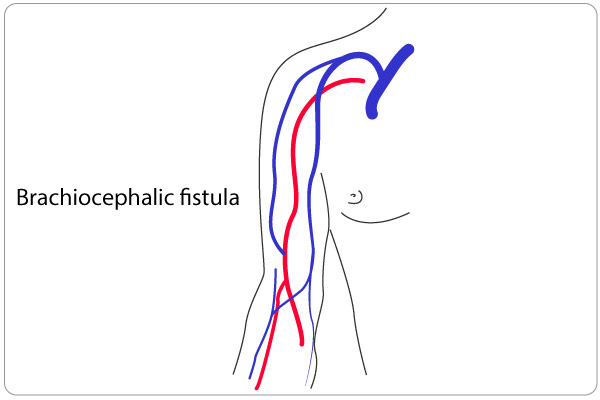

Vascular system
General organization
Vessels: Tubes that carry blood
Arteries: Vessels carrying blood away from the heart
Veins: Vessels carrying blood towards the heart

General characteristics of arteries
- Pulsatile
- Thick walled
- Smaller lumen
- Empty
- Single
- Deep
- Pinkish red
General characteristics of Veins
- Large lumen
- Thin walled
- Superficial
- Multiple
- Variable
- Have clot
- Blackish, blue
- Valve +
Vessels – types
Resistance vessels
- Arteries, but mainly arterioles
Exchange vessels
- Capillaries, sinusoids and small venules
Capacitance vessels
- Veins
Arteriole
Thoroughfare channels measuring 100 microns in diameter
Meta-arteriole
- Small vessels linking arteriole and capillaries
- Tunica media shows - intermittent smooth muscles forming
- Precapillary sphincters
Pre-capillary sphincters
- Band of smooth muscles at the beginning of capillaries
- Regulate blood flow into the capillary bed
- Especially appreciated in the mesenteric circulation
Microstructure of vessels
Wall of the vessel has three layers
- Tunica intima - Inner most layer of the vessel, Made of simple squamous epithelium
- Tunica media - thickest layer of the vessel, Made of either smooth muscles or elastic fibres
- Tunica Adventitia - Outer most layer of the vessel. Made of loose areolar tissue. Has small blood vessels supplying the wall - vasa vasorum
Elastic artery - Large sized artery
- Has predominantly elastic fibres in tunica media
- Aorta, pulmonary trunk and stem of great vessels in mediastinum are elastic arteries
Muscular artery - medium sized artery
- Has predominantly smooth muscles in tunica media
- Radial artery, femoral artery, coronary artery and all peripheral vessels are muscular arteries
Vascular Anastomosis
Vascular anastomosis: a cross-connection between adjacent channels of a vascular network
Anastomoses - pleural
Types
- Arterial anastomosis
- Venous anastomosis
- Arteriovenous anastomosis
Collateral circulation
- Alternative circulation due to presence of anastomoses is collateral circulation
Arterial anastomosis
- Communication between arteries
- Communicating channels may be actual anastomosis or potential anastomosis
Eg:
Circle of Willis at the base of the brain
Anastomosis around elbow joint and scapula
Venous anastomosis
- Communication between veins
- Communicating channels may be actual anastomosis or potential anastomosis
Eg:
Dorsal venous arch of hand and foot
Median cubital vein connecting cephalic and basilic veins
Arteriovenous anastomosis

- Communication between artery and vein
- Communicating channels may be actual anastomosis or potential anastomosis
- They contain no capillary segment
- Function: Thermoregulation. Transport of heat from the body core to surface areas containing arteriovenous anastomosis
Eg:
Numerous arteriovenous anastomosis present in the glabrous skin of the hands and feet
Arteriovenous fistula
- Definition: An abnormal communication between artery and vein
- It is surgically created in patients requiring haemodialysis
- Such Arteriovenous fistula provides long-lasting access through which blood can be removed and returned during haemodialysis
Sites of Arteriovenous fistula for haemodialysis:
Usually created in non-dominant hand
In forearm - Radiocephalic fistula. Radial artery anastomosed with cephalic vein
At elbow - brachiocephalic fistula. Brachial artery anastomosed with cephalic vein
In hand - Snuffbox fistula

End arteries
Definition
Arteries that do not anastomose with any other arteries are end arteries
Examples
- Splenic artery supplying spleen
- Coronary arteries: Though there exists many anatomical anastomoses between right and left coronary arteries, they are not functional. So coronary arteries are end arteries.
Significance
- Occlusion of end arteries leads to failure of blood supply to the part concerned.
- This leads to ischemic death of that part
Eg: Coronary artery occlusion leads to ischemic death of myocardium (myocardial infarction)
Thrombosis
Thrombosis
Formation of clot (thrombus) in an uninjured vessel
Haemostasis
Tightly regulated process maintaining the blood in a fluid, clot-free state in normal vessels.
Three components of haemostasis and thrombosis
Vascular wall
Intact endothelial cells maintain liquid blood flow by
- Inhibiting platelet aggregation
- Prevent coagulation factor activation
- Lyse blood clots
Injured/inflamed endothelium contribute to the formation of thrombus by
- Expression of tissue factor and von Willebrand Factor (vWF)
- Exposure of basement membrane collagen
Platelets
- Injured endothelium exposes basement membrane and extracellular matrix
- Platelets adhere to this and secrete thomboxane A2
- Platelets aggregate and activate thrombin
Coagulation cascade
- Involves sequential enzymatic conversion of circulating and local proteins
- In the final stage - thrombin converts fibrinogen to fibrin
- Fibrin forms definitive haemostatic plug
Three important factors influencing thrombosis
- Endothelial injury
- Abnormal blood flow - statis or turbulence
- Hypercoagulability
Venous thrombosis
- Clot formation in the deep veins of the leg - is Deep Venous thrombosis (DVT)
- Deep thrombi in the larger veins of the lower limb can embolize to right side of the heart and into the pulmonary circulation
Arterial thrombosis
- Atherosclerosis - major initiator of the thromboses
- Left sided cardiac thrombosis can embolize to brain and kidney
Embolism
- Embolus is the detached intravascular and gaseous mass
- These masses are carried to distant places from their point of origin
Thromboembolism
- Thrombus that gets dislodge into the circulation
- Pulmonary thromboembolism
- Thrombus in the veins and right side of the heart can get into the pulmonary circulation
- Systemic thromboembolism
- Thrombus in the left side of the heart and major arteries can embolize into the brain and kidney
Other forms of embolism
- Fat embolism
- Air embolism
- Amniotic fluid embolism
Infarction
- Ischemic necrosis (death) of a tissue due to lack of arterial supply or venous drainage
- Ischemic necrosis of part of myocardium due to blockage of coronary arterial circulation is myocardial infarction
- Especially important in tissues supplied with end arteries and not having alternative arterial supply
Like – Heart, Brain, Kidney and Retina
Aneurysm
- A balloon like bulge in the artery due to weakness in its wall
- Most common site of central arterial aneurysm - abdominal aorta between the renal arteries and common iliac arteries
- Most common site of peripheral arterial aneurysm - popliteal artery behind knee joint